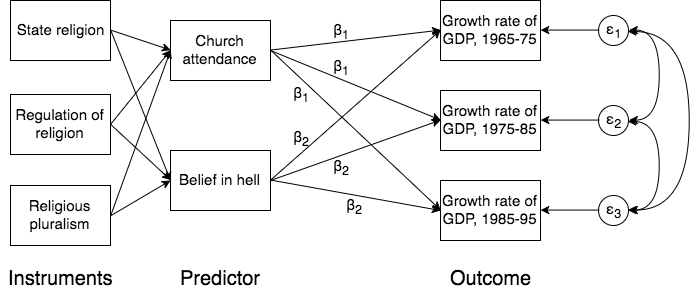
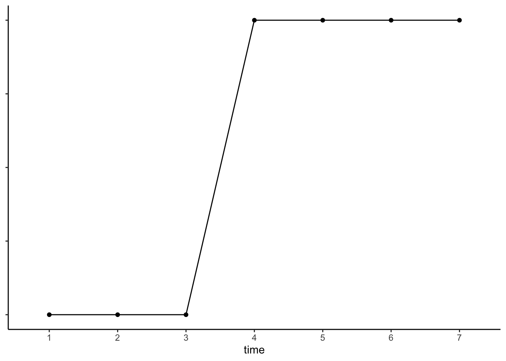

Ryota Mugiyama
Home
Research
Lecture
Notes
Stata
R
Blog
Blog
日々の思いつきを不定期に残しています。2022年9月以前の記事は旧ウェブページから移行させたものです。
学生向け：レポートでやるべき（でない）こと
教員になって授業を担当するようになってから毎学期150〜200本くらいのレポートを読んでいるが、そこでいろいろとレポートを見ていると、レポートの基礎が押さえられていないと思うレポートにしばしば出会う。レポートの型というのは多かれ少なかれ決まっており、型にしたがって書くことで（多少のほころびがあったとしても）きちんとしたレポートを作ることができる。
Aug 19, 2022
Ryota Mugiyama
Rによる社会調査データ分析の手引き
今年度一年間のゼミ、およびそれ以前の授業などを経て、社会学の実証研究論文を書くうえでどのようなことを教えたらよいのか、どのようなところで学生がつまづきやすいのかといった経験が蓄積されてきました。これを踏まえて、来年度以降のゼミなどで使用するための資料を作成しました。せっかくですので、こちらを公開したいと思います。
Feb 28, 2022
Ryota Mugiyama
初年次ゼミで何をする（した）のか：その2
今学期も先学期に引き続き、基礎演習という、おおむね初年次教育に該当する内容を扱う必修科目を担当した。しかし、自分はあまりまともな初年次教育なるものを受けた記憶がなく（きっ…
Dec 28, 2021
Ryota Mugiyama
初年次ゼミで何をする（した）のか
所属が変わって早くも3ヶ月半が経ち、もうすぐ1学期が終わりそうな気配だ。今学期の前半は慣れないことや授業準備、プライベートで忙しくてんてこまいだったけど、7月ころからようやく落ち着いてきた。
Jul 18, 2021
Ryota Mugiyama
RとRStudioをインストールするときのつまづきポイントとその対処法へのリンク
RおよびRStudioのインストールで困ったときの対処法についてのリンクをまとめました。
Aug 3, 2020
Ryota Mugiyama
職域分離の指標におけるセレクションと解釈をめぐる問題
昨今の社会情勢のなか、気分も憂鬱になり、なかなか研究にも集中できない日が続いています。なので少し論文を読みながら考えごとをして息抜きでもしようと思って、表題の内容について最近考えたことをメモに残しておきました。すこし長めなの（とwordpressで書くのがとても面倒なの）で、別ファイルにしました。
Mar 25, 2020
Ryota Mugiyama
学振PD (社会科学) の申請書を公開します
新年度、引越しをしたり所属が変わったりということで、ばたばたしています。3月25日に無事博士（社会学）の学位を授与され、平成31年度（令和元年度？）より学術振興会特別研究員PDとして研究を続けます。これまでとはいろいろな意味で大きく環境が変わるので期待半分不安半分というところですが、頑張っていきたいと思います。
Apr 26, 2019
Ryota Mugiyama
Stataで完全失業率の推移を作図する手順
公表されている官庁統計から何らかの作図をするという機会はよくあると思います。
May 27, 2018
Ryota Mugiyama
おすすめの計量分析の教科書（社会学向け）
自分の所属している大学院では基本的に研究方法については独学で身につけることが期待されています。なので、これまでに自分でいろいろと教科書を調べて読みました。もしかしたら同じようにどのような教科書を読むべきか悩んでいる人がいるかもしれないので、何かの役に立つことを期待して、自分が読んでみて良いと思ったテキストを挙げておきます。
Feb 18, 2018
Ryota Mugiyama
感想メモ：（階層）研究に必要なことは何か
私の好きな文章の1つに、盛山先生の以下の特集論文があります。
Feb 6, 2018
Ryota Mugiyama
Job (in)stability or job (in)security?：「安定性」の使い分けに関するメモ）
先日この本を読んでいたところ、興味深い記述をみつけた。
Feb 6, 2018
Ryota Mugiyama
感想メモ：Sociology as a Population Science by John H. Goldthorpe (2015)
表題の本を最近読みました。面白かったので簡単な要約（もれなく要約したわけではなく、自分の関心に即して要約しています）を混じえた感想メモを残しておきます。
Jun 12, 2017
Ryota Mugiyama

感想メモ：Young (2009) 「社会学研究におけるモデルの不確実性」
授業のReadingsで読んだ論文が面白かったのでメモ。
Jun 12, 2017
Ryota Mugiyama
学振DC（社会科学）の申請書を公開します
少し前になりますが、平成29年度の学術振興会特別研究員DC2への採用内定をいただきました（面接免除）。そこで、採用にあたり提出した申請書を公開いたします。以下にリンクを貼っておきます。研究課題名は「無業経験の長期的影響にみる格差生成プロセスの男女比較研究」です。
Feb 20, 2017
Ryota Mugiyama

時間による効果の変化をモデリングする
時系列データやパネルデータを分析するときの主要な関心の1つは、変化する独立変数が従属変数に対していかなる効果を与えるのかを明らかにすることにあります。たとえば社会学だと、「結婚することによって幸福度がどのように変化するか」であるとか、「転職することによって賃金は上がるのか」といった問いが例として挙げられます。
Nov 12, 2016
Ryota Mugiyama
SSM職業小分類（追加コード含む）をSSM職業8分類に変換するStataシンタックス
（2017/5/11 701番以降の追加コードを修正） （2017/5/13 熟練、半熟練、非熟練の説明を追加、15の職業大分類を追加）
Apr 7, 2016
Ryota Mugiyama
有意水準を示す*印をつけるExcel関数
2016/11/7 (Mon) 関数に間違いがあったので修正しました。
Jan 31, 2016
Ryota Mugiyama
No matching items